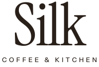

Silk
A simple starting identity for the concept: a text wordmark, a warm earthy palette and a font pair. It was generated with AI as a starting point and would be refined with a real client.


Wordmark
Just the name, set in Instrument Serif with a little tightened spacing, over "Coffee & Kitchen" in small, widely spaced capitals. No symbol. The italic is used for headlines to echo the softness of the name.


Colour
Three brand colours (Espresso, Mustard, Linen) and two support tones. Mustard is kept for small accents, never for body text on light backgrounds.
Espresso #2A201A
Text, dark sections
Mustard #BE9149
Accents, small details
Linen #F1EADF
Page background
Toffee #6E4A33
Support: labels, secondary
Sand #E6D9C5
Support: panels
Type
Instrument Serif
Headlines, the wordmark, big statements. Upright and italic.
Instrument Sans
Body text, menus, labels. Regular, medium and semibold.
Both fonts are free under the SIL Open Font License and hosted with the site.
Photography
Stand-in stock photos chosen for warm, natural light. They come from Pexels under the free Pexels License and do not show a real Silk. A real client's own photos would replace them.
- Ánh Đặng · Pexels License
- Raymond Petrik · Pexels License
- Madison Inouye · Pexels License
- Yulia Ilina · Pexels License
- Victor Pace · Pexels License
- K · Pexels License
- Chevanon Photography · Pexels License
- Vincent Rivaud · Pexels License
- Zehra Aynacı · Pexels License
- Marta Dzedyshko · Pexels License
- Federica Gioia · Pexels License
- Việt Anh Nguyễn · Pexels License
- Mike Jones · Pexels License
- Anastasia Ilina-Makarova · Pexels License
- Anna Shvets · Pexels License
- Nida Kurt · Pexels License
- RDNE Stock project · Pexels License
- Thirdman · Pexels License
- Lisa Fotios · Pexels License
- Adrien Olichon · Pexels License
- Sarah · Pexels License
- Julian Cabrera S · Pexels License
- cottonbro studio · Pexels License
- 1500m Coffee · Pexels License
- NastyaSensei · Pexels License